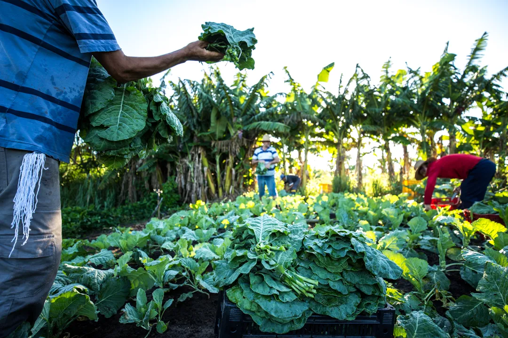

Do campo a cidade colhendo oportunidades
A zona rural é importante para a economia e para a sociedade,
sendo a responsável pelo fornecimento de matérias-primas e alimentos,
além da preservação do meio ambiente e a manutenção da cultura.
Campo e a cidade possuem funções e atividades diferentes, mas que se complementam. Cabe ao campo a produção dos alimentos e de matérias-primas utilizadas pela indústria. As cidades se urbanizam, e tem como função principal a atividade industrial e o setor de serviços.
Quais vantagens da cidade em relação ao campo?
Acesso à saúde: por fim,
um dos principais benefícios da cidade em relação ao campo é sem dúvidas o acesso à saúde.
Enquanto nas cidades, é possível encontrar um posto de saúde ou hospital, no campo, esse acesso é muito mais difícil.

Agricultura familiar:
A agricultura familiar é, portanto, um sistema produtivo que articula diversas temporalidades e diversas espacialida- des,
e que permite a reprodução social da família no campo ou na cidade, não somente em termos econômicos, mas também culturais.